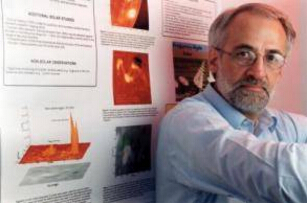
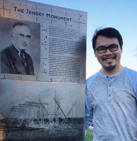

This material is based upon work supported by the National Science Foundation under Grant Nos. AST-1312802. Any opinions, findings, and conclusions or recommendations expressed in this material are those of the author(s) and do not necessarily reflect the views of the National Science Foundation. Funding is also provided by a NASA Supporting Research & Technology grant NNX14AK66G.
Dale Gary

Office: 101 Tiernan Hall, Center for Solar-Terrestrial Research, New Jersey Institute of Technology
Prof. Dale Gary is Distinguished Professor in Physics at NJIT, and Director of Solar Observatories. That includes the Big Bear Solar Observatory, an optical observatory in California with the highest-resolution solar telescope in the world, and also the Owens Valley Solar Array, a unique radio facility also in California dedicated to observing the Sun. Together, these two observatories are used to study the outer layers of the Sun from the surface outward. We especially study the way magnetic fields on the Sun affect solar activity such as solar flares, coronal mass ejections, and other events making up "Space Weather." We also study how radio bursts from the Sun affect radio and cell-phone communications. Prof. Gary teaches astronomy and physics courses at NJIT, as well as writing papers on his research to share with other scientists.
Prof. Gary received a B.S. in Physics in 1976 from University of Michigan, and a Ph.D. in Astro-Geophysics from U. Colorado, Boulder. He then spent 15 years at Caltech before coming to NJIT in 1997.
Bin Chen

Office: 101 Tiernan Hall, Center for Solar-Terrestrial Research, New Jersey Institute of Technology
Dr. Bin Chen is Assistant Professor of Physics affiliated with the Department of Physics and the Center for Solar-Terrestrial Research. He moved to New Jersey Institute of Technology from Harvard-Smithsonian Center for Astrophysics in January 2016, where he held an appointment as Astrophysicist in the Solar and Stellar X-ray Group. Before that, he was a postdoctoral fellow at the CSTR of NJIT. He obtained a Ph.D. from the University of Virginia in 2013, a M.S. from the University of the Chinese Academy of Sciences in 2008, and a B.S. from the Peking University in 2005. He received the NSF CAREER Award in 2017 and the NASA Living-with-the-Star Jack Eddy Fellowship in 2013.
Chen's main expertise is in solar radio astronomy. He is particularly interested in explosive events on the Sun known as solar flares and coronal mass ejections, which have the potential of affecting the space environment around the Earth. He is one of the leading experts in utilizing some of the world's largest radio observatories for solar observing, including the Karl G. Janksy Very Large Array (VLA) and the Atacama Large Millimeter Array (ALMA). He is a core member of NJIT's own solar-dedicated radio telescope: the Expanded Owens Valley Solar Array. He is also experienced in using NASA's space-based solar observatories including RHESSI, SDO, Hinode, IRIS, and STEREO.
Gregory Fleishman
Office: 101 Tiernan Hall, Center for Solar-Terrestrial Research, New Jersey Institute of Technology
Solar/Stellar/Space Physics: coronal and chromospheric magnetography, active regions, solar and stellar flares, energy release, particle acceleration and transport, radiation mechanisms, data driven 3D models, solar science with ALMA.
Theoretical Physics/Astrophysics: plasma astrophysics, emission and transfer of electromagnetic radiation, fast codes for radiation transfer, high-energy processes, and charged particle kinetics in interstellar medium, galactic objects, jets, and gamma-ray bursts.
Research interests: Solar/Stellar Physics: radiative transfer and spectrum synthesis at radio wavelengths, solar atmospheric models, solar chromosphere, chromospheric magnetography, quiet Sun, active regions, millimeter observations of the Sun, solar science.
Sijie Yu
Office: 101 Tiernan Hall, Center for Solar-Terrestrial Research, New Jersey Institute of Technology
Email: sijie.yu@njit.edu
Phone: (973)596-6276
Personal Website:
Dr. Sijie Yu is a Postdoctoral Researcher affiliated with the Department of Physics and the Center for Solar-Terrestrial Research. He obtained a Ph.D. from the University of the Chinese Academy of Sciences in 2015 and a B.S. from the University of Science and Technology of China in 2010. He received the Pollyanna Chu Award of Chinese Academy of Sciences for Excellent Ph.D Graduates in 2015.
Zhitao Wang is advised by Profs. Dale Gary and Bin Chen. His research focuses on radio diagnostics of magnetic field in solar active regions and radio bursts produced in solar flares. He works on the Expanded Owens Valley Solar Array project and uses observational data from the Karl G. Jansky Very Large Array.
Natsuha Kuroda
Office: 101 Tiernan Hall, Center for Solar-Terrestrial Research, New Jersey Institute of Technology
Office: 101 Tiernan Hall, Center for Solar-Terrestrial Research, New Jersey Institute of Technology
Email: shahedabegum.shaik@njit.edu
Phone: (973)642-4274
Personal Website:
Shaheda Shaik is advised by Prof. Dale Gary. She received a M.S. degree in Applied Physics from New Jersey Institute of Technology in Aug 2013. She is pursuing PhD with research concentrated on the source characteristics of the microwave emission during solar flares. She mainly uses and works with the radio data observed from Expanded Owens Valley SolarArray (EOVSA), along with Karl G. Jansky Very Large Array (VLA).
Yi Chai
Office: 101 Tiernan Hall, Center for Solar-Terrestrial Research, New Jersey Institute of Technology
Email: yc389@njit.edu
Phone: (973)642-4274
Personal Website:
Yi Chai is advised by Prof. Dale Gary. He obtained a B.S. from Peking University in 2011 and entered the NJIT Applied Physics PhD program in 2013. His research focuses on solar radio astronomy. He currently studies solar chromospheric phenomena using the Atacama Large Millimeter Array (ALMA) combined with data from the Solar Dynamic Observatory and the Interface Region Imaging Spectrograph. He is familiar with using SolarSoft IDL and CASA for analyzing solar data.
Sherry Chhabra
Office: 101 Tiernan Hall, Center for Solar-Terrestrial Research, New Jersey Institute of Technology
Email: sc787@njit.edu
Phone: (973)642-4274
Personal Website:
Sherry Chhabra, advised by Prof. Dale Gary, obtained her Bachelors and Masters of Science from University of Pune, India and joined the NJIT Applied Physics PhD program in 2015. Her interests lie in Radio and EUV Solar Astrophysics. Currently she is working on imaging spectropscopy of CME-associated radio Bursts observed by the Owens Valley Long Wavelength Array (OVRO-LWA), while also using data from LASCO-SOHO, SWAP, and SDO.
Yingjie Luo
Office: 101 Tiernan Hall, Center for Solar-Terrestrial Research, New Jersey Institute of Technology
Email: yl863@njit.edu
Phone: (973)642-4274
Personal Website:
Yingjie Luo is advised by Prof. Bin Chen. He obtained a B.S. from University of Science and Technology of China. He joined in the NJIT Applied Physics PhD program in Fall 2016. He is now mainly working on the radio data from Karl G. Jansky Very Large Array (VLA).